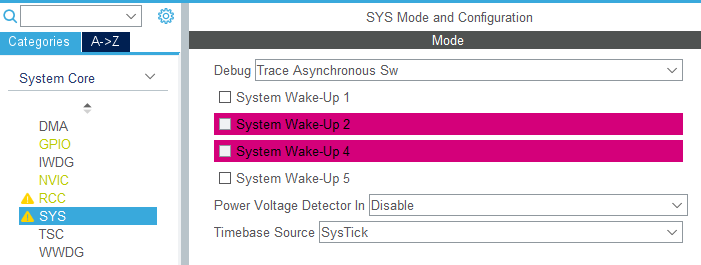

Wojciech Olech
Architektury
STM32 vs ATMega
* w dużej części, niekoniecznie w 100%
ALTERNATYWY
* Nie wszystkie biblioteki Arduinowe będą działać na STM32, ponieważ niektóre mają wstawki dla AVRów lub korzystają z peryferiów niedostępnych na STMach (EEPROM)
Żeby stworzyć nowy projekt w STM32CubeIDE, otwieramy Information Center i wybieramy opcję "Start new STM32 project", lub w menu File -> New wybieramy opcję "STM32 Project"
W oknie które się pojawiło możemy wybrać jedną z trzech zakładek:
Nas interesuje zakładka "Board Selector". W pole wyszukiwania wpisujemy model naszego Nucleo
Po wybraniu płytki i kliknięciu "Next >" wyświetli nam się okno z wyborem lokalizacji projektu, języka i typu projektu. Zmieniamy tylko nazwę, pozostałe ustawienia zostawiamy domyślnie, po czym klikamy "Finish".
Jeśli tworzymy projekt na płytkę ST, to pojawi nam się pop-up z pytaniem czy chcemy ustawić peryferia na domyślne tryby - klikamy "Yes".
Powinnien się automatycznie otworzyć następujący widok w STM32CubeIDE, z poziomu którego możemy konfigurować peryferia procesora oraz jego poszczególne piny.
Po lewej stronie mamy pogrupowane peryferia zgodnie z ich kategoriami
Na obrazku procesora możemy zauważyć kilka różnych kolorów pinów.
Żeby skonfigurować dany pin, możemy na niego kliknąć i wybrać jedną z wielu funkcjonalności do których będzie używany. Zazwyczaj nie wystarczy jednak tylko tutaj zaznaczyć jego trybu, ponieważ w większości przypadków należy również skonfigurować ustawienia peryferii (jeśli pin zaświeci się na pomarańczowo).
Kolorystyczne oznaczenia pojawiają się również na liście peryferiów
Kluczowymi peryferiami do których warto zaglądać przy tworzeniu każdego projektu są RCC (Reset and Clock Control) i SYS (System)
W RCC możemy ustawić z jakich źródeł zegara ma korzystać nas procesor. W SYS możemy m.in. zmienić tryb debugowania i bazowy zegar "ticków" naszego programu.
W zakładce "Clock Configuration" mamy pokazane drzewo zegarów dostępnych dla naszego procesora.
Na ten moment nie musimy się nim przejmować, automatycznie jest ono ustawione tak żeby wszystkie peryferia działały.
W niektórych przypadkach jednak będziemy chcieli zmienić częstotliwości taktowania procesora lub peryferiów - wystarczy wtedy wpisać wartość w żądane pole i CubeMX automatycznie przeliczy dzielniki i mnożniki tak, żeby uzyskać dany zegar, lub zwróci błąd jeśli nie będzie to możliwe.
STMy posiadają kilka głównych źródeł zegarowych.
CubeMX automatycznie dostosowuje ustawienia PLL i źródła jeśli podamy mu częstotliwość zegara w polu z niebieską ramką.
Podstawowy debugging możemy skonfigurować w zakładce System Core -> Sys
W zakładce Project Manager -> Project możemy ustawić
Dodatkowo, w podzakładce Code Generation możemy kazać Cube'owi generować pliki inicjalizacyjne jako para nagłówek+źródło i robić backup kodu przy każdym generowaniu. Polecam zaznaczyć następujące opcje:
Kod automatycznie zostaje wygenerowany przy zapisie. Po każdym zapisie projektu w widoku CubeMX'a zostaje także re-generowany.
Należy zwracać uwagę na to, w jakich miejscach piszemy kod - CubeMX w plikach którymi zarządza generuje sekcje oznaczone jako komentarze w stylu C, przykładowo
/* USER CODE BEGIN 2 */ /* USER CODE END 2 */
Kod musimy umieszczać w tych sekcjach, żeby nie został permanentnie usunięty po re-generowaniu kodu.
Polecam korzystać z systemu kontroli wersji (Git).
Wygenerowany projekt powinien wyglądać mniej-więcej w ten sposób:
Najbardziej interesują nas pliki
main.c - w tym pliku jest główna funkcja programu, mainstm32f4xx_it.c - w tym pliku są funkcje przerwańOprócz nich, mamy również pliki w których są inicjowane i deklarowane uchwyty do obiektów peryferii oraz niskopoziomowych elementów uC. W katalogu Drivers mamy niskopoziomowe sterowniki procesora - CMSIS oraz HAL
Zadanie 1: napisać program który będzie migał diodką.
Funkcje które należy wykorzystać: HAL_GPIO_TogglePin, HAL_Delay
HAL_GPIO_TogglePin przyjmuje dwa argumenty: port i pin portu którego chcemy zmienić stan
HAL_Delay przyjmuje jeden argument: czas w milisekundach
Przydatne skróty klawiszowe:
/* Infinite loop */ /* USER CODE BEGIN WHILE */ while (1) { HAL_GPIO_TogglePin(LD2_GPIO_Port, LD2_Pin); HAL_Delay(500); /* USER CODE END WHILE */ /* USER CODE BEGIN 3 */ } /* USER CODE END 3 *
STM32CubeIDE umożliwia upload i debugowanie programu na mikrokontrolerze.
Żeby uruchomić program i rozpoczać debugging, należy wcisnąć F11 lub przycisk z "robaczkiem" na górnym pasku. Można uprzednio zbudować program (Ctrl+B lub "młotek" na górnym pasku) żeby sprawdzić czy nie ma w nim błędów.
Po kliknięciu Debug może nam się pokazać okienko z wyborem trybu debugowania. Wybieramy STM32 Cortex-M C/C++ Application
Następnie zostanie wyświetlone okienko z ustawieniami debugowania - nic tutaj nie zmieniamy, klikamy OK
CubeIDE powinno przejść do widoku debugowania, który prezentuje się następująco:
Domyślnie, program automatycznie zatrzyma się na pierwszej linijce funkcji main.
W pasku na górze mamy kilka przycisków do sterowania przebiegiem debugowania.
Od lewej:
Żeby rozpocząć działanie programu, klikamy "Kontynuuj do następnego breakpointa" (F8)
Mikrokontrolery ARM z serii Cortex-M3, Cortex-M4 i Cortex-M7 posiadają moduł ITM (Instrumented Trace Macrocell), który razem z SWO (Serial Wire Output) pozwala na tracing i komunikację z mikrokontrolerem poprzez debuger. ITM posiada 32 kanały, z czego dwa są zarezerwowane dla CMSIS: 0 do wysyłania danych, 31 dla RTOSa.
My będziemy wykorzystywać kanał 0 jako nasze standardowe wyjście, co pozwoli nam wygodnie używać funkcji printf do wyświetlania komunikatów podczas debugowania.
Żeby przechwytywać dane z ITMa w naszym IDE, należy włączyć SWV (Serial Wire Viewer) w ustawieniach debugowania.
Wchodzimy w "Debug -> Debug Configurations", następnie wybieramy naszą konfigurację i przechodzimy do zakładki "Debugger". Zaznaczamy tam checkboxa "Enable" w sekcji "Serial Wire Viewer" i poprawiamy "Core Clock" na zegar naszego mikrokontrolera (HCLK) (można sprawdzić go w zakładce "Clock Configuration" w Device Configuration Toolu - jeśli go zamknęliśmy, trzeba dwa razy kliknąć na plik *.ioc w drzewku projektu)
Należy również upewnić się, że w Device Configuration Toolu wybraliśmy tryb debugowania "Trace Asynchronous Sw" - można to zmienić w zakładce "System Code -> SYS -> Debug", domyślnie jest "Serial Wire"
Po włączeniu SWV, możemy zobaczyć czy odbieramy dane z mikrokontrolera.
W głównej pętli, po zmianie stanu diody należy wstawić linijkę
ITM_SendChar('x');
i rozpocząć debugowanie
Przed kliknięciem "Continue" należy stworzyć okienko z konsolą SWV.
Na pasku na górze wchodzimy w menu "Window" -> "Show View" -> "SWV" -> "SWV ITM Data Console".
Następnie ustawiamy sobie stworzone menu w wygodnej dla nas pozycji.
Po ustawieniu okna, klikamy "Configure trace" i zaznaczamy port 0. W "Data Console" powinna się pojawić nowa karta z opisem "Port 0". Klikamy "Start trace" (czerwone kółko) i możemy uruchomić program - w karcie powinny zacząć pojawiać się znaki x
Mikrokontrolery STM32 mają wbudowaną obsługę krytycznych błędów. W momencie w którym procesor wejdzie w błędny stan (na przykład przez odwołanie do błędnego wskaźnika lub krytyczny błąd peryferiów), procesor automatycznie skoczy do jednej z poniższych funkcji (znajdują się one w pliku stm32X_it.c, gdzie X to seria procesora, na przykład f4xx dla STM32F4):
HardFault_Handler - krytyczny błąd który występuje w momencie w którym pojawi się nieobsłużony (lub niemożliwy do obsłużenia) stan programu.MemManage_Handler - wywołuje się w momencie w którym program próbuje dostać się do chronionej przez MPU (Memory Protection Unit) pamięciBusFault_Handler - wywołuje się w momencie wystąpienia krytycznego błędu na szynie danychUsageFault_Handler - wywołuje się w momencie nieprawidłowego obsłużenia procesora (na przykład przy próbie wykonania niewłaściwej instrukcji, lub próbie niepoprawnego dostępu do pamięci, albo dzielenia przez zero jeśli procesor jest odpowiednio skonfigurowany)Program domyślnie zawiesi się na tym handlerze, żeby programista mógł sprawdzić stan pamięci i rejestrów.
printf na SWVIstnieje bardzo prosta metoda na używanie printf'a do debugowania naszego kodu poprzez SWV.
Wystarczy nadpisać funkcję __io_putchar z której korzysta printf do wyświetlania tekstu w następujący sposób:
int __io_putchar(int c) { if (c == '\n') { // Obsługa znaku nowej linii, żeby nie trzeba było za każdym razem używać \r\n ITM_SendChar('\r'); } ITM_SendChar(c); return c; }
Funkcja ITM_SendChar wysyła pojedynczy znak po SWV. Jeśli poprawnie skonfigurowaliśmy debugging, tekst powinien wyświetlić się w konsoli SWV na porcie 0.
Czasami standardowy printf potrafi crashować procesor. W takim przypadku, polecam skorzystać z alternatywnej implementacji, na przykład https://github.com/mpaland/printf (w tej konkretnej, należy nadpisać funkcję void _putchar(char character))
Mastering STM32 (świetna książka opisująca w ludzki sposób działanie STMa oraz obsługę peryferiów)
https://www.carminenoviello.com/mastering-stm32
Manual programowania procesora (zaawansowane i szczegółowe źródło informacji na temat programowania STMów opartych o daną serię Cortexów):
PM0214 - Programming Manual - STM32 Cortex-M4 and MPUs programming manual
https://www.st.com/content/ccc/resource/technical/document/programming_manual/6c/3a/cb/e7/e4/ea/44/9b/DM00046982.pdf/files/DM00046982.pdf/jcr:content/translations/en.DM00046982.pdf
https://www.google.com/ - w szukajkę wpisujemy site:st.com filetype:pdf XXX, gdzie XXX to rzecz która nas interesuje. Na stronie ST jest mnóstwo materiałów szkoleniowych w formie dokumentów i prezentacji które wyjaśniają mniej lub bardziej szczegółowo działanie peryferiów STM32.
Jeśli nie znajdziemy wyników które nas interesują, to pomijamy site:st.com (i/lub filetype:pdf).